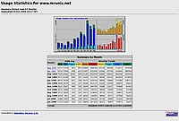

Webalizer
Dieser Artikel wurde für die folgenden Ubuntu-Versionen getestet:
Ubuntu 16.04 Xenial Xerus
Ubuntu 14.04 Trusty Tahr
Zum Verständnis dieses Artikels sind folgende Seiten hilfreich:
Das Programm Webalizer  dient zur Auswertung der Logdateien, die Webserver auf Basis von Besucheranfragen erstellen. Die Software erzeugt Berichte im HTML-Format, die anschließend mit einem beliebigen Webbrowser betrachtet werden können. Demoseiten zeigen beispielhaft das Ergebnis einer solchen Auswertung, die in mehr als 30 Sprachen erfolgen kann. Die konkret verwendete Sprache hängt von den Spracheinstellungen des verwendeten Rechners ab.
dient zur Auswertung der Logdateien, die Webserver auf Basis von Besucheranfragen erstellen. Die Software erzeugt Berichte im HTML-Format, die anschließend mit einem beliebigen Webbrowser betrachtet werden können. Demoseiten zeigen beispielhaft das Ergebnis einer solchen Auswertung, die in mehr als 30 Sprachen erfolgen kann. Die konkret verwendete Sprache hängt von den Spracheinstellungen des verwendeten Rechners ab.
Häufig kritisiert wird bei Webalizer die fehlende Auswertung von 404-Fehlern, die besonders für Webmaster und -designer interessant ist. Die beiden Projekte Webalizer Xtended und Stone Steps Webalizer sind Weiterentwicklungen des ursprünglichen Programms und lösen nicht nur dieses Problem.
Eine Alternative zu Webalizer ist AWStats, dessen Konfiguration allerdings um einiges komplexer ist. Noch umfangreichere Optionen zur Auswertung (u.a. eine Echtzeitanalyse) bieten die Projekte GoAccess und Piwik.
Installation¶
 Folgendes Paket muss installiert [1] werden:
Folgendes Paket muss installiert [1] werden:
webalizer (universe)
 mit apturl
mit apturl
Paketliste zum Kopieren:
sudo apt-get install webalizer
sudo aptitude install webalizer
Konfiguration¶
Webalizer ist unter Ubuntu bereits passend für den Webserver Apache vorkonfiguriert, so dass man das Programm sofort einsetzen kann – vorausgesetzt, es sind Webserver-Logdateien vorhanden. Wer selbst Hand anlegen will, nimmt Änderungen über die gut dokumentierte Konfigurationsdatei /etc/webalizer/webalizer.conf vor. Zum Bearbeiten [2] dieser Datei werden Root-Rechte [3] vorausgesetzt.
Um Duplikate in den Logfiles zu ignorieren, wird folgende Option gesetzt:
Incremental yes
Verwendet man statt Apache den Server lighttpd:
LogFile /var/log/lighttpd/access.log.1
Und ein anderes Ausgabeverzeichnis (Standard: /var/www/webalizer/) wird so konfiguriert:
OutputDir /var/www/www.beispiel.de/webalizer
Verwendung¶
 Das Programm besitzt keine grafische Oberfläche, sondern wird über einen Cronjob regelmäßig gestartet. Bereits bei der Installation wird über die Datei /etc/cron.daily/webalizer festgelegt, dass Webalizer automatisch einmal pro Tag startet. Es werden dabei alle .conf-Dateien unter /etc/webalizer/ verwendet, d.h. man kann z.B. für jeden vHost eine separate anlegen. Direkt nach der Installation und Anpassung der Konfigurationsdatei ist es sinnvoll, das Programm einmalig von Hand zu starten:
sudo /etc/cron.daily/webalizer
Die Auswertung erfolgt normalerweise inkrementell, wodurch nur neue Log-Einträge berücksichtigt werden. Weitere Informationen liefert die Manpage zum Programm.
Das Ergebnis kann mit einem Webbrowser auf zweierlei Arten betrachtet werden:
Öffnen der Datei /var/www/webalizer/index.html
über den Webserver mit
http://<Server-IP>/webalizer/http://localhost/webalizer/(nur auf dem Server selbst möglich)
Hinweis:
Webalizer verwendet in der Standardkonfiguration nicht die aktuelle Logdatei, sondern quasi die "vorletzte" Version. Diese Thematik wird im Artikel Logdateien näher erläutert.
Problembehebung¶
Auswertung in englisch¶
Wie in der Einleitung erwähnt, richtet sich die in der Auswertung verwendete Sprache nach den Spracheinstellungen. Dies führt unter Umständen zu dem unschönen Effekt, dass der manuelle Aufruf von Webalizer eine deutsche Auswertung, der automatische Aufruf über /etc/cron.daily/webalizer aber eine englische Auswertung ergibt. Falls diese Situation auftritt, sollte man die systemweiten Spracheinstellungen überprüfen.
HostnameLookups aktivieren¶
In der Monatsauswertung erscheint für die Länder (Countries oder Locations), aus denen Seiten abgerufen wurden, statt eines bunten Tortendiagramms nur ein einfarbiges mit der Aufschrift "unresolved/unknown (100%)". Dieses scheinbare Fehlverhalten liegt nicht am Webalizer, sondern ist in der Konfiguration des Webservers begründet: jede Abfrage des Hostnamens erzeugt unnötigen "Traffic" auf dem Webserver. Daher ist die Namensauflösung normalerweise abgeschaltet.
Um sie z.B. für den Webserver Apache zu aktivieren, bearbeitet man mit Root-Rechten die Datei /etc/apache2/apache2.conf und ändert den Eintrag
HostnameLookups Off
in
HostnameLookups On
Anschließend muss der Webserver neu gestartet werden. Diese Umstellung gilt nur für neue Log-Einträge.
Wer zusätzliche Abfragen während des Betriebs lieber vermeiden möchte, kann auch das Hilfsprogramm logresolv verwenden, um die Adressen im Nachhinein aufzulösen. Dazu folgendes Paket installieren:
apache2-utils
mit apturl
Paketliste zum Kopieren:
sudo apt-get install apache2-utils
sudo aptitude install apache2-utils
HostnameLookups offline nutzen¶
Als Alternative zur oben beschriebenen Methode oder wenn die Apache-Konfiguration nicht geändert werden soll/darf, kann die Offline-Geo-Auflösung verwendet werden. Auf der Projektseite gibt es im Downloadbereich die Latest Webalizer GeoDB database  zum Herunterladen. Die Hostauflösung geschieht dann ausschließlich mit Hilfe einer lokalen Geo-Datenbank.
zum Herunterladen. Die Hostauflösung geschieht dann ausschließlich mit Hilfe einer lokalen Geo-Datenbank.
Datenbank herunterladen:
wget ftp://ftp.mrunix.net/pub/webalizer/webalizer-geodb-latest.tgz
Nach /usr/share/GeoDB entpacken:
sudo tar -xzf webalizer-geodb-latest.tgz -C /usr/share/GeoDB
In der /etc/webalizer/webalizer.conf muss dann die GeoDB noch aktiviert werden:
GeoDB yes
Der korrekte Pfad zur GeoDB kann ebenfalls in der Konfigurationsdatei von Webalizer angegeben werden, oder man schaut sich die Ausgabe von
webalizer -vV
an, wie die Standard-Verzeichnisse lauten.
Links¶
Webalizer Tuning
 - wie man die Auswertung optimiert, 01/2009
- wie man die Auswertung optimiert, 01/2009Webalizer – Apache web server log file analysis Tool
- UbuntuGeek 06/2008Wie die Besucher zählen
- Webalizer, AWStats und Google Analytics im Vergleich17 Tools zur Website-Analyse
- Alternativen zu Google Analytics, 10/2009Web-Stats mit GoAccess
- Blogbeitrag, 04/2017AWFFull
- noch eine Weiterentwicklung von Webalizer, kann direkt aus den Paketquellen installiert werden (awffull)
- Erstellt mit Inyoka
-
 2004 – 2017 ubuntuusers.de • Einige Rechte vorbehalten
2004 – 2017 ubuntuusers.de • Einige Rechte vorbehalten
Lizenz • Kontakt • Datenschutz • Impressum • Serverstatus -
Serverhousing gespendet von